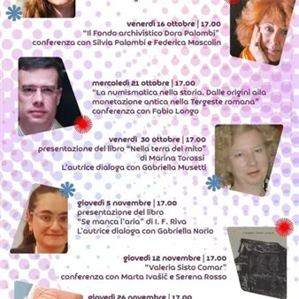

da mer 7 ott a mer 16 dic · dalle 17:00
Custodi di storie. Incontri alla Hortis
“Custodi di storie” è il ciclo di otto incontri che, nella Sala Conferenze della Biblioteca Attilio Hortis (via Madonna del Mare 13), propone un calendario di conferenze e presentazioni di libri. Il titolo richiama la vocazione propria di un’istituzione come la biblioteca che…
 Indicazioni
Indicazioni
- Costi e prenotazioni
- Costo non indicato · Prenotazione non indicata
- Programma
- Programma da verificare. Apri la fonte ufficiale per orari e possibili aggiornamenti.
- In caso di maltempo
- Nessuna indicazione specifica pubblicata.
- Note
- Acquisito automaticamente dalla fonte.
L’EVENTO
Descrizione completa
“Custodi di storie” è il ciclo di otto incontri che, nella Sala Conferenze della Biblioteca Attilio Hortis (via Madonna del Mare 13), propone un calendario di conferenze e presentazioni di libri. Il titolo richiama la vocazione propria di un’istituzione come la biblioteca che, attraverso la conservazione del patrimonio librario, la tutela degli archivi e la promozione della lettura, assolve alla propria missione istituzionale. A curare l’iniziativa è Gabriella Norio, responsabile della Biblioteca Hortis e dell’Archivio Diplomatico della “civica”, che modererà gli incontri, accogliendo gli ospiti e favorendo il dialogo tra scrittori, critici e il pubblico. Gli incontri sono a ingresso libero , fino a esaurimento dei posti, e iniziano alle ore 17.00 PROGRAMMA Il calendario si apre mercoledì 7 ottobre con la presentazione del libro Harold della giovane scrittrice e pittrice Eleonora Giurgevich , vincitrice, nel maggio di quest’anno, del Premio Letterario Nazionale intitolato a Lina Marini. L’autrice dialoga con Gabriella Norio. L’incontro con Silvia Palombi di v enerdì 16 ottobre sarà dedicato alla donazione di due fondi di straordinario interesse. Il primo è dedicato alla storia dell’arte, mentre il secondo documenta la preziosa collaborazione con Francesco Libonati e Mario Pannunzio per la rivista Il Mondo . Interverranno Silvia Palombi e Federica Moscolin , che illustreranno il materiale archivistico. L’incontro, moderato da Gabriella Norio, sarà arricchito dalla lettura di alcune lettere selezionate dal Fondo Dora Palombi. L’attenzione si sposterà sulla numismatica mercoledì 21 ottobre , con la conferenza La numismatica nella storia di Fabio Longo : un affascinante excursus storico attraverso le testimonianze monetali, dalle origini fino alla Tergeste romana. Introduce Gabriella Norio. Venerdì 30 ottobre , Gabriella Musetti propone un viaggio letterario alla scoperta dell’opera e delle suggestioni evocate dal volume Nella terra di mito (Campanotto Editore) di Marina Torossi Tevini . Una vicenda storica che intreccia romanzo e saggio, senza mai interrompere il filo della narrazione. Giovedì 5 novembre , l’autrice I. F. Riva converserà con Gabriella Norio sul suo libro Se manca l’aria . Protagonista è Trieste, esplorata attraverso un giallo che riserva un inaspettato colpo di scena finale. Una conferenza speciale, dedicata a riscoprire e valorizzare la figura, oggi poco conosciuta, della scrittrice Valeria Sisto Comar , è fissata per giovedì 12 novembre . L’attività e la produzione letteraria dell’autrice saranno ripercorse attraverso gli interventi di Marta Ivašič , Gabriella Norio e Serena Rosso. Rapiti di Tonino Bettanini narra l’“odissea” del protagonista Brando Costa, collaboratore del ministro degli Esteri italiano, rapito in Afghanistan da una banda dell’Isis. L’autore dialogherà e approfondirà i contenuti e le dinamiche del romanzo giovedì 26 novembre , insieme a Roberto Antonione e Paolo Marcolin. A chiudere il calendario degli appuntamenti sarà, mercoledì 16 dicembre , il volume di Gianluca Lemma La rivoluzione dei simili . L’autore converserà con Gabriella Norio in un confronto aperto sui temi affrontati nell’opera, che trasporta i lettori nelle atmosfere misteriose dell’Antico Egitto.
IL PROGRAMMA
Programma e orari
Appuntamenti raccolti dalle fonti elencate. Dove manca un orario, non è ancora disponibile in questa scheda.
Programma pubblicato
- ore 17.00
INFORMAZIONI UTILI
Prima di partire
- Controllare la fonte prima di partire.
ORGANIZZAZIONE